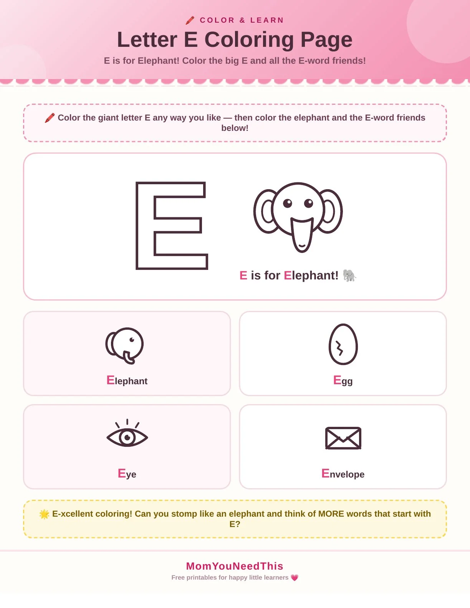

Free Letter E Coloring Page E is for Elephant 🐘
A big, bold letter E just waiting to be colored! This simple printable pairs the letter with friendly pictures, perfect for little hands and big imaginations.
Quick Answer
This free printable pairs a big, bold letter E with pictures that begin with its sounds — elephant, egg and eye. Elephant and egg carry the short /e/ sound, and eye shows off e's long sound, its own name. Toddlers and preschoolers color the letter and the pictures while they practise hearing both, building letter recognition and fine motor control. Large, simple outlines suit little hands. Download and print at home with no signup needed.
At a Glance
- Ages: Toddlers and preschoolers
- Activity: Coloring a big letter E with elephant, egg and eye pictures
- Skills: Letter E recognition and coloring
- Format: Printable coloring page (PDF)
- Cost: Free, no signup
🐘 Elephant
🥚 Egg
👁️ Eye

🖍️ Color The Letter E
Print the page, grab the crayons, and color the big letter E and its pictures. As each picture gets colored, say its name together: elephant and egg start with the short “eh”, and eye starts with e's long name-sound.
⬇️ Download Free Printable 🖨️ Print🎁 Free printable for toddlers & preschoolers
🎨 Talk About The Pictures
As your child colors, chat about the pictures. An elephant and an egg begin with the short e sound, an eye begins with its long sound — and engine and envelope begin with the short one too. Ask which one your child would pick: ride in an engine, open an envelope, or meet an elephant?
🖼️ Display The Masterpiece
Hang the finished E where your child can see it — the fridge or a bedroom door. Displayed work builds pride, and an E on the wall keeps quietly teaching: three bars, middle one shorter, every time your child walks past.
🎨 Keep Exploring Free Letter Activities
More alphabet learning activities are added regularly for toddlers and preschoolers.
🎁 View All Free Resources🔤 E Is For Elephant — And More About The Letter E
E is for elephant, egg and eye — the three pictures on this page — and the letter itself is a small geometry lesson: a straight line with three bars. Count the bars while you color: three bars make an E, and only two would make it an F. Its small partner e looks nothing like it — a tiny loop — so this pair has to be learned as two shapes.
The short e sound is a quiet, relaxed “eh” made with the mouth barely open. It is the sound at the start of elephant, egg, every and engine. Eye, the third picture, carries e's other sound — its long sound, which is simply its name, also heard in eagle and emu. One page, both sounds: that is what makes this letter's page special.
When the page is done, the learning does not have to stop. E is the most common letter in English, so a storybook hunt for it is the easiest game there is — your child will find one in almost every line.
🖨️ How to Use This Printable
Get started in minutes — everything here is free and made for busy parents.
- Download the printable. Tap the download button to save the free Free Letter E Coloring Pages file to your device.
- Print it out. Use any home printer and regular paper — cardstock works great for pages little hands will use again and again. The print button opens the full-size page in a new tab if you prefer to print from there.
- Learn together. Sit with your child and say the short “eh” each time a new picture gets its color. Short sessions work best.
- Explore more. Check the free printables linked below for your next activity.
❓ Free Letter E Coloring Pages FAQs
Is this Free Letter E Coloring Pages printable free?
Yes — every printable on MomYouNeedThis is 100% free to download and print. No signup, no payment, just tap the download button and print the E page as often as your child wants to color it again.
How do I use this letter e printable?
Print the page and color it together: name the letter E, make its short /e/ sound like the start of elephant, and talk about each picture as it gets colored. Short, playful sessions work better than long lessons for little learners.
What literacy skills does this practice?
Letter recognition, beginning sounds, and fine motor control. Coloring the letter E itself teaches its shape — a straight line with three bars — while the pictures anchor its short /e/ sound to words your child already knows. E also has a long sound that says its name, heard in eagle. These are the core pre-reading skills that prepare children for phonics and reading.
🔗 More Free Printables You’ll Love
Pair this printable with more free learning activities from the MomYouNeedThis library.
- 🎨 Free Letter F Coloring PageFree printable letter f coloring page for little learners.
- 🔊 Free Lowercase Letter E Sound PracticeFree printable lowercase letter e sound practice for little learners.
- ✏️ Free Letter E Formation PracticeFree printable letter e formation practice for little learners.
- 🖼️ Free Letter E Picture SortFree printable letter e picture sort for little learners.